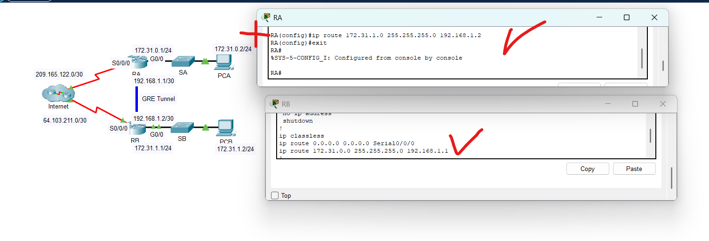
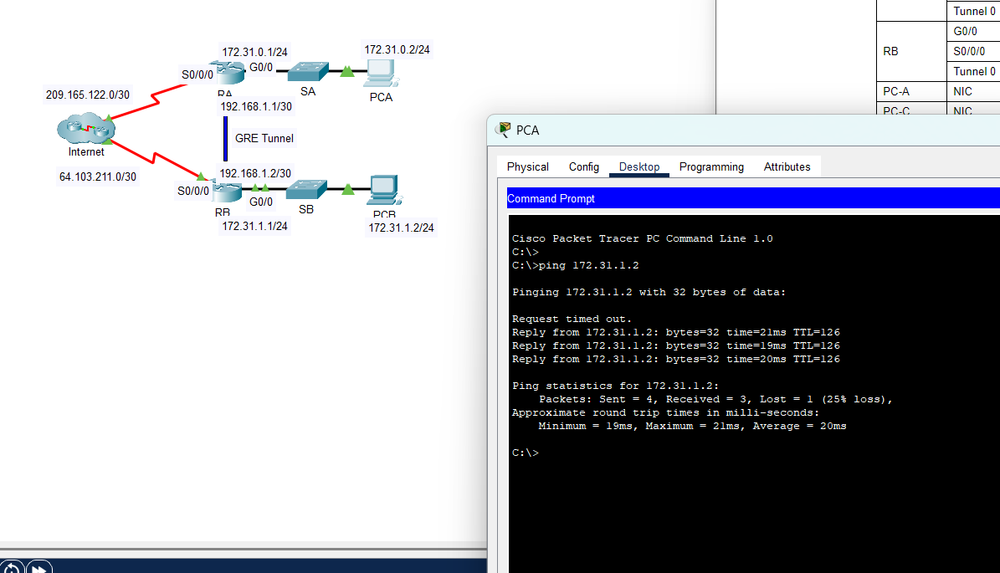

1. IP Address Conflict (Network Layer - Layer 3)
Difficulty Level
Medium
Related Layers
Network Layer (L3)
Related Protocols
IP, ARP, DHCP
Problem Definition:
An IP address conflict occurs when two or more devices on the same network are configured with the same IP address. This leads to unexpected behavior, communication errors, and loss of connectivity for affected devices.
Potential Causes:
- Manual static IP assignment errors by administrators.
When administrators manually configure IPs without proper documentation
When administrators manually assign static IP addresses, they may accidentally assign the same IP to multiple devices, leading to conflicts.
- Improper or overlapping DHCP address pool settings.
DHCP servers with improperly configured address ranges
DHCP servers may be configured with overlapping address pools, causing multiple devices to receive the same IP address.
- Device cloning or OS imaging without updating IP settings.
Creates duplicate network configurations
Cloning devices or using OS images without reconfiguring network settings can result in duplicate IP addresses across devices.
- Rejoining devices attempting to use old IPs.
Devices connecting after absence may cause conflicts
Devices that were previously disconnected from the network may attempt to reuse their old IP addresses, which might already be assigned to another device.
Simulation File:
Download Packet Tracer Simulation
Table: IP configuration of devices
| Device | IP Address | Subnet Mask | Default Gateway | Status |
|---|---|---|---|---|
| PC0 | 192.168.1.10 | 255.255.255.0 | 192.168.1.1 | Conflict |
| PC1 | 192.168.1.11 | 255.255.255.0 | 192.168.1.1 | Normal |
| PC2 | 192.168.1.10 | 255.255.255.0 | 192.168.1.1 | Conflict |
| Switch0 | 192.168.1.100 | 255.255.255.0 | — | Normal |
Verifying Connectivity with Ping


Solution Steps:
-
Scan the network using tools like
arp -aor network mapping to detect duplicate IPs. IP conflict detection using ARP scan
IP conflict detection using ARP scan -
Identify devices sharing the same IP manually or through simulation.
Examine the console output to identify which devices are sharing the same IP address. In this scenario, PC0 and PC2 are sharing the same IP address (192.168.1.10).
-
Reassign a unique IP to one of the conflicting devices.
 Changing PC2's IP address to 192.168.1.12
Changing PC2's IP address to 192.168.1.12 -
Check and correct DHCP server configuration to prevent overlapping assignments.
- Click on the router in Packet Tracer and switch to the CLI tab.
- Check the DHCP pool configuration by running the following command:
show running-config | include dhcp - If there is an IP range conflict, correct the DHCP settings:
configure terminal ip dhcp excluded-address 192.168.1.10 192.168.1.20 ip dhcp pool MYPOOL network 192.168.1.0 255.255.255.0 default-router 192.168.1.1 end - Restart the DHCP service to apply the changes:
clear ip dhcp binding *
-
Ping test all IPs to verify uniqueness and restore connectivity.
Successful ping test after IP conflict resolution -
Document IP usage and consider using IP address management tools.
Best Practice: Documenting IP addresses using a table or IP Address Management System (IPAM) helps prevent future conflicts.
2. Inter-Vlan Routing Issue (Network Layer - Layer 3)
Difficulty Level
Medium
Related Layers
Network Layer (L3)
Related Protocols
IP, VLAN, 802.1Q
Problem Definition:
Inter-VLAN routing is the process of forwarding traffic between different VLANs (Virtual Local Area Networks) on a network. This is typically done using a Layer 3 device, such as a router or a Layer 3 switch. Without proper inter-VLAN routing, devices in different VLANs cannot communicate with each other.
Potential Causes:
- Missing or misconfigured VLAN interfaces on the router or Layer 3 switch.
Router interfaces must be properly configured for each VLAN
The router requires properly configured subinterfaces with the correct VLAN IDs to route between VLANs.
- Incorrect IP addressing or subnetting for VLANs.
IP subnets must match the VLAN configuration
Each VLAN should have its unique subnet to ensure proper routing between networks.
- Switchport configurations not set to trunk mode for inter-VLAN communication.
Trunk ports must carry multiple VLAN traffic
The switch port connecting to the router must be set to trunk mode to carry traffic from multiple VLANs.
Simulation File:
Download Packet Tracer Simulation
Table: VLAN Configuration
| VLAN ID | Name | Subnet | Default Gateway | Connected Devices |
|---|---|---|---|---|
| 10 | Faculty | 172.17.10.0/24 | 172.17.10.1 | PC1, PC2 |
| 30 | Student | 172.17.30.0/24 | 172.17.30.1 | PC3, PC4 |
Connectivity Testing

Solution Steps:
-
Verify switch port configuration
 Checking VLAN assignments on the switch
Checking VLAN assignments on the switchOn switch gigabitEthernet0/1 to router must be trunk mode because it is connected to router
 Interface G0/1 incorrectly configured as access mode
Interface G0/1 incorrectly configured as access mode -
Configure switch port for trunk mode
configure terminal interface gigabitEthernet0/1 switchport mode trunk switchport trunk allowed vlan 10,30 endInterface G0/1 after changing to trunk mode -
Check router subinterfaces configuration
G0/1.10 and G0/1.30 are subinterfaces of G0/1 and they are configured with IP addresses. Their encapsulation type is dot1q and they must match with the VLAN ID
 Router subinterface configuration showing incorrect VLAN assignments
Router subinterface configuration showing incorrect VLAN assignments -
Configure router subinterfaces correctly
configure terminal interface gigabitEthernet0/1.10 no encapsulation dot1Q 30 exit interface gigabitEthernet0/1.30 no encapsulation dot1Q 10 encapsulation dot1Q 30 ip address 172.17.30.1 255.255.255.0 exit interface gigabitEthernet0/1.10 encapsulation dot1Q 10 ip address 172.17.10.1 255.255.255.0 no shutdown exit -
Verify inter-VLAN connectivity
After making the changes, try to ping from one VLAN to another to check if it is working
Successful ping test between devices in different VLANsBest Practice: Always ensure switch ports connecting to routers are configured as trunk ports and that router subinterfaces have the correct VLAN encapsulation.
3. DHCP Server Issues (Network Layer - Layer 3)
Difficulty Level
Medium
Related Layers
Network Layer (L3)
Related Protocols
DHCP, IP
Problem Definition:
Devices fail to obtain IP addresses automatically due to DHCP server misconfigurations or failures. This can result in devices being unable to communicate on the network, leading to connectivity issues and disruptions in network services. Without a valid IP address, devices cannot access shared resources, connect to the internet, or communicate with other devices on the network.
Potential Causes:
- DHCP server is not enabled or running.
Server may be disabled or misconfigured
The DHCP server may be turned off or not functioning, preventing devices from obtaining IP addresses.
- IP address pool is exhausted.
No more available addresses to assign
The DHCP server has run out of available IP addresses to assign to devices.
- Network devices are not configured to use DHCP.
Client configuration issues
Devices may be set to use static IPs instead of obtaining them automatically from the DHCP server.
Simulation File:
Download Packet Tracer Simulation
Table: Network Device Configuration
| Device | IP Assignment Method | Status |
|---|---|---|
| Router | 192.168.1.1/24 (Static) | DHCP Server |
| PC1-PC8 | DHCP Client | Normal |
| PC9 | DHCP Client | No IP Address |
DHCP Failure Detection

Solution Steps:
-
Verify that the DHCP server is enabled and running
Open the CLI on the router and configure the interface connected to the switch:
Router> enable Router# configure terminal Router(config)# interface GigabitEthernet0/0 Router(config-if)# ip address 192.168.1.1 255.255.255.0 Router(config-if)# no shutdown Router(config-if)# exitThen configure the DHCP service on the router:
Router(config)# ip dhcp pool LAN Router(dhcp-config)# network 192.168.1.0 255.255.255.0 Router(dhcp-config)# default-router 192.168.1.1 Router(dhcp-config)# dns-server 8.8.8.8 Router(dhcp-config)# exit -
Check the IP address pool and expand it if necessary
If one or more PCs do not receive an IP address (e.g., PC9), the address pool may be too small. Check for excluded addresses:
Router# show running-configRouter configuration showing excessive excluded address rangeIf the range is too narrow, reduce the excluded IP range like this:
Router(config)# no ip dhcp excluded-address 192.168.1.1 192.168.1.191 Router(config)# ip dhcp excluded-address 192.168.1.1 192.168.1.189This change increases available IPs in the pool for more clients.
-
Ensure devices are set to obtain IP addresses automatically
For each PC that needs to use DHCP:
- Click on the PC.
- Go to the Desktop tab.
- Open IP Configuration.
- Select the DHCP option (instead of Static).
-
Verify successful IP assignment
Successful IP address assignment via DHCPBest Practice: Always configure the DHCP server with sufficient address space for all clients, and reserve specific addresses for network infrastructure devices.
4. DHCP Spoofing Attack (Data Link/Network Layers - L2/L3)
Difficulty Level
High
Related Layers
Data Link (L2), Network (L3)
Related Protocols
DHCP, ARP
Problem Definition:
An attacker introduces a rogue DHCP server to distribute malicious network configurations, potentially intercepting or redirecting network traffic.
Potential Causes:
- Unsecured switch ports allowing unauthorized DHCP servers.
No port security measures implemented
When switch ports are not properly secured, attackers can connect rogue DHCP servers to the network.
- Missing DHCP snooping protection on network switches.
No DHCP traffic monitoring
Without DHCP snooping, switches cannot distinguish between legitimate and malicious DHCP servers.
- Physical access to network infrastructure.
Unauthorized physical network access
Unauthorized physical access to network equipment allows attackers to connect malicious devices.
Simulation File:
Download Packet Tracer Simulation
Router Configuration for Initial Setup:
For Router 2 (Rogue):
enable
configure terminal
interface gigabitEthernet0/0/0
no shutdown
exit
ip dhcp pool CCNA
network 192.168.2.0 255.255.255.0
default-router 192.168.2.100
dns-server 192.168.2.50
exit
interface gigabitEthernet0/0/0
ip address 192.168.2.100 255.255.255.0
no shutdown
exit
exit
write memoryFor Router 1 (Legitimate):
enable
configure terminal
interface gigabitEthernet0/0/0
no shutdown
exit
ip dhcp pool CNC
network 192.168.1.0 255.255.255.0
default-router 192.168.1.100
dns-server 192.168.1.50
exit
interface gigabitEthernet0/0/0
ip address 192.168.1.100 255.255.255.0
no shutdown
exit
exit
write memory| Device Type | IP Address | Connected Port | Details | Status |
|---|---|---|---|---|
| Legitimate DHCP Server | 192.168.1.100 | Switch Port 5 | IP Range: 192.168.1.10-50 | Secure |
| Rogue DHCP Server | 192.168.2.100 | Switch Port 6 | IP Range: 192.168.2.10-50 | ATTACKER |
| Workstation 1 | 192.168.2.6 | Switch Port 1 | Compromised by rogue DHCP | COMPROMISED |
| Workstation 2 | 192.168.1.2 | Switch Port 2 | Normal client | Secure |
| Workstation 3 | 192.168.1.3 | Switch Port 3 | Normal client | Secure |
| Workstation 4 | 192.168.2.5 | Switch Port 4 | Compromised by rogue DHCP | COMPROMISED |
DHCP Spoofing Attack Detection


Solution Steps:
-
Enable DHCP Snooping on the Switch
With this, all ports are untrusted by default, and only the trusted ports can send DHCP messages:
Switch> enable Switch# configure terminal Switch(config)# ip dhcp snooping -
Configure Trusted Ports
Mark the port connected to the legitimate DHCP server as trusted:
Switch(config)# interface fastethernet 0/5 Switch(config-if)# ip dhcp snooping trust Switch(config-if)# exit Switch(config)# no ip dhcp snooping information option Switch(config)# exit -
Verify Configuration
Check that DHCP snooping is properly configured:
Switch# show ip dhcp snooping Switch# show ip dhcp snooping binding DHCP snooping verification showing trusted port and bindings
DHCP snooping verification showing trusted port and bindings -
Implement Additional Protections
- Configure port security to limit device connections
- Implement Dynamic ARP Inspection (DAI)
- Enable IP Source Guard
Best Practice: Remember that the attack mechanism is "Spoofing" and the defense is "Snooping". Always implement DHCP snooping on production networks to protect against rogue DHCP servers.
5. Default Gateway Issue (Network Layer - Layer 3)
Difficulty Level
Medium
Related Layers
Network Layer (L3)
Related Protocols
IP, ARP, ICMP
Problem Definition:
The default gateway is a critical network component that acts as an access point or IP router for devices to communicate with other networks, including the internet. Issues with the default gateway can disrupt network connectivity and prevent devices from accessing external resources.
Potential Causes:
- Incorrect default gateway IP address configured.
Wrong gateway settings on client devices
If the default gateway IP is set incorrectly on the client device, it will fail to communicate with external networks.
- Default gateway device (e.g., router) is down or unreachable.
Router hardware or connectivity issues
The router or gateway device may be powered off, disconnected, or experiencing hardware/software issues.
- Network interface issues on the client device.
Client-side network adapter problems
Problems with the network adapter, such as driver issues or physical damage, can prevent proper communication with the gateway.
Simulation File:
Download Packet Tracer Simulation
Table: Default Gateway Configuration
| Device | Interface | IP Address | Subnet Mask | Default Gateway |
|---|---|---|---|---|
| R1 | G0/0 | 192.168.10.1 | 255.255.255.0 | N/A |
| R1 | G0/1 | 192.168.11.1 | 255.255.255.0 | N/A |
| S1 | VLAN 1 | 192.168.10.2 | 255.255.255.0 | Not Configured |
| S2 | VLAN 1 | Not Configured | Not Configured | Not Configured |
| PC1 | NIC | 192.168.10.10 | 255.255.255.0 | 192.168.10.1 |
| PC2 | NIC | 192.168.10.11 | 255.255.255.0 | 192.168.10.1 |
| PC3 | NIC | 192.168.11.10 | 255.255.255.0 | 192.168.11.1 |
| PC4 | NIC | 192.168.11.11 | 255.255.255.0 | 192.168.11.1 |
Gateway Issue Detection
Solution Steps:
-
Verify router configuration
Check the router's running configuration to ensure interfaces are properly configured:
Router> enable Router# show running-configRouter configuration with properly set up interfaces -
Check PC configurations
Verify that all PCs have the correct default gateway configured according to their subnet:
 PC configuration showing correct IP and gateway settings
PC configuration showing correct IP and gateway settings -
Check switch configurations
Examine both switches to identify configuration issues:
Switch configuration showing missing default gateway and IP addressIssues identified:
- Switch 1 is missing a default gateway configuration
- Switch 2 has no IP address configured on VLAN 1
-
Configure Switch 1 default gateway
Switch1> enable Switch1# configure terminal Switch1(config)# ip default-gateway 192.168.10.1 Switch1(config)# exit Switch1# write memoryThis configures the default gateway on Switch 1 to point to its local router interface.
Configure Switch 2 IP address and default gateway
Switch2> enable Switch2# configure terminal Switch2(config)# interface vlan 1 Switch2(config-if)# ip address 192.168.11.2 255.255.255.0 Switch2(config-if)# no shutdown Switch2(config-if)# exit Switch2(config)# ip default-gateway 192.168.11.1 Switch2(config)# exit Switch2# write memory -
Verify connectivity between networks
Test connectivity between devices in different subnets using ping:
Successful ping test between devices in different subnetsBest Practice: Always ensure management devices like switches have properly configured default gateways to enable remote management across networks.
6. NAT Configuration Issues (Network Layer - Layer 3)
Difficulty Level
High
Related Layers
Network Layer (L3)
Related Protocols
IP, NAT, ACL
Problem Definition:
Network Address Translation (NAT) is a process used to map private IP addresses within a local network to a public IP address for internet access. Misconfigurations in NAT can prevent devices on a private network from accessing the internet or external resources. This can lead to connectivity issues and disrupt network operations.
Potential Causes:
- Incorrect NAT rules or settings.
Improper NAT configuration on routers
NAT rules on the router may be misconfigured, leading to improper translation of private IP addresses to public IP addresses. For example, missing or incorrect
ip nat insideorip nat outsideconfigurations can cause issues. - Overlapping IP address ranges.
Conflicting network addresses
If the private IP address range overlaps with another network's IP range, NAT may fail to function correctly. This can occur in cases where multiple networks are merged or when VPNs are used.
- Insufficient NAT resources on the router.
NAT table capacity limits
Routers have a limited capacity for NAT translations. If the number of devices exceeds this capacity, new devices may fail to establish connections. This is often referred to as "NAT table exhaustion."
Simulation File:
Download Packet Tracer Simulation
Table: NAT Network Configuration
| Device | Interface | IP Address | Subnet Mask | Default Gateway |
|---|---|---|---|---|
| R1 | G0/0 | 10.4.10.254 | 255.255.255.0 | N/A |
| R1 | G0/1 | 10.4.11.254 | 255.255.255.0 | N/A |
| R1 | S0/0/1 | 10.4.1.2 | 255.255.255.252 | N/A |
| R2 | S0/0/0 | 209.165.76.194 | 255.255.255.224 | N/A |
| R2 | S0/0/1 | 10.4.1.1 | 255.255.255.252 | N/A |
| Server1 | NIC | 64.100.201.5 | 255.255.255.0 | 64.100.201.1 |
| PC1 | NIC | 10.4.10.1 | 255.255.255.0 | 10.4.10.254 |
| PC2 | NIC | 10.4.10.2 | 255.255.255.0 | 10.4.10.254 |
| L1 | NIC | 10.4.11.1 | 255.255.255.0 | 10.4.11.254 |
| L2 | NIC | 10.4.11.2 | 255.255.255.0 | 10.4.11.254 |
NAT Issue Detection
Test connectivity by pinging from internal devices to external addresses:
PC1> ping 64.100.201.5Expected failure if NAT is not working properly.
As we see, only R2 could ping external addresses. This indicates a NAT configuration issue.
Solution Steps:
-
Verify NAT configuration on the router
Check the current NAT configuration using:
Router# show ip nat translation Router# show running-config | include natIf the output is empty, it indicates that no NAT translations are currently active. This could be due to:
- No traffic has passed through the NAT-enabled interfaces yet
- Incorrect NAT configuration, such as missing or misconfigured access lists
- Interfaces not properly marked as
ip nat insideorip nat outside
-
Identify interface role issues
 NAT configuration showing incorrect interface assignments
NAT configuration showing incorrect interface assignmentsThe NAT configuration on R2 shows that the inside and outside interfaces are swapped.
-
Correct interface NAT roles
Fix the NAT configuration by properly marking interfaces:
Router# configure terminal Router(config)# interface s0/0/0 Router(config-if)# ip nat outside Router(config-if)# exit Router(config)# interface s0/0/1 Router(config-if)# ip nat inside Router(config-if)# exitThis correctly configures S0/0/0 (connected to the internet) as the outside interface and S0/0/1 (connected to the internal network) as the inside interface.
-
Verify and correct access lists
Access list configuration for NAT translationEnsure that access lists are properly configured to permit traffic from all intended internal networks:
Router(config)# no access-list 101 Router(config)# access-list 101 permit ip 10.4.10.0 0.0.1.255 anyThis command allows NAT for all IPs between 10.4.10.0 and 10.4.11.255. The "any" keyword indicates that access to all destination networks is permitted.
-
Verify connectivity after changes
 Successful ping test after NAT configuration correction
Successful ping test after NAT configuration correctionTest connectivity from internal devices to external networks to confirm that NAT is working correctly.
Best Practice: Always verify NAT configuration usingshow ip nat translationsduring active traffic to ensure translations are occurring properly. For production environments, consider implementing NAT logging to help troubleshoot issues.
7. EIGRP Routing Protocol Issues (Network Layer - Layer 3)
Difficulty Level
High
Related Layers
Network Layer (L3)
Related Protocols
EIGRP, IP
Problem Definition:
Network connectivity issues arise between routers running the EIGRP protocol, leading to missing routes and neighbor adjacency failures. For instance, consider a scenario where Router A and Router B are connected via a serial link, but Router A cannot establish an EIGRP neighbor relationship with Router B. This could result in Router A being unable to learn routes to networks behind Router B, causing communication failures between devices in those networks.
Potential Causes:
- Mismatched Autonomous System (AS) numbers between routers
EIGRP AS number must match between neighbors
EIGRP routers will only form adjacencies with other routers in the same AS. If AS numbers differ, they will not communicate.
- Missing network statements in EIGRP configuration
Incomplete routing configuration
Networks must be explicitly advertised in EIGRP to be included in the routing process.
- Auto-summary causing route aggregation issues
Unwanted route summarization
Auto-summary can cause routing issues when connecting discontiguous networks.
- Missing passive-interface configuration on LAN ports
Unnecessary EIGRP processing on end-user segments
Interfaces connected to end-user segments should be configured as passive to prevent EIGRP processing.
- ACL or firewall blocking EIGRP multicast traffic (224.0.0.10)
Security rules blocking protocol communication
Access lists or firewall rules may block the multicast traffic needed for EIGRP neighbor discovery.
Simulation File:
Download Packet Tracer Simulation
Table: Router Interface Configuration
| Device | Interface | IP Address | Subnet Mask | Default Gateway |
|---|---|---|---|---|
| R1 | G0/0 | 172.31.10.1 | 255.255.255.0 | N/A |
| R1 | S0/0/0 | 172.31.40.225 | 255.255.255.252 | N/A |
| R1 | S0/0/1 | 172.31.40.233 | 255.255.255.252 | N/A |
| R2 | G0/0 | 172.31.20.1 | 255.255.255.0 | N/A |
| R2 | S0/0/0 | 172.31.40.226 | 255.255.255.252 | N/A |
| R2 | S0/0/1 | 172.31.40.229 | 255.255.255.252 | N/A |
| R2 | S0/1/0 | 209.165.201.1 | 255.255.255.224 | N/A |
| R3 | G0/0 | 172.31.30.1 | 255.255.255.0 | N/A |
| R3 | S0/0/0 | 172.31.40.234 | 255.255.255.252 | N/A |
| R3 | S0/0/1 | 172.31.40.230 | 255.255.255.252 | N/A |
Table: End Device Configuration
| Device | Interface | IP Address | Subnet Mask | Default Gateway |
|---|---|---|---|---|
| PC1 | NIC | 172.31.10.10 | 255.255.255.0 | 172.31.10.1 |
| PC2 | NIC | 172.31.20.10 | 255.255.255.0 | 172.31.20.1 |
| PC3 | NIC | 172.31.30.10 | 255.255.255.0 | 172.31.30.1 |
EIGRP Configuration Issues

Solution Steps:
-
Verify AS Number Consistency
Check the AS numbers on all routers to ensure they match:
Router> enable Router# show running-config | section router eigrp
Router configuration showing inconsistent EIGRP AS numbersIf AS numbers are inconsistent, reconfigure the routers to use the same AS number:
Router# configure terminal Router(config)# no router eigrp [OLD_AS_NUM] Router(config)# router eigrp [NEW_CONSISTENT_AS_NUM] Router(config-router)# network [NETWORK] [WILDCARD_MASK] Router(config-router)# no auto-summary Router(config-router)# exit Router configuration after correcting AS number
Router configuration after correcting AS number -
Check EIGRP Neighbors
Verify that EIGRP neighbors are properly established:
Router# show ip eigrp neighborsEIGRP neighbor table with successfully established adjacenciesIf neighbors are missing, ensure all network statements are correct:
Router(config)# router eigrp [AS_NUM] Router(config-router)# network [NETWORK] [WILDCARD_MASK] Router(config-router)# no auto-summary Router(config-router)# exitThe wildcard mask is the inverse of the subnet mask (e.g., 255.255.255.0 → 0.0.0.255)
-
Configure Passive Interfaces
Configure interfaces connected to end-user segments as passive:
Router(config)# router eigrp [AS_NUM] Router(config-router)# passive-interface GigabitEthernet0/0 Router(config-router)# exitThis prevents unnecessary EIGRP processing while still advertising the network.
-
Verify Connectivity
Test connectivity between devices in different network segments using ping:
Successful ping test demonstrating connectivity across EIGRP-routed networksBest Practice: For internet connectivity, redistribute a static default route into EIGRP:Router(config)# ip route 0.0.0.0 0.0.0.0 [NEXT_HOP] Router(config)# router eigrp [AS_NUM] Router(config-router)# redistribute static Router(config-router)# exit
8. Switch Loop Issues (Data Link Layer - Layer 2)
Difficulty Level
Medium
Related Layers
Data Link Layer (L2)
Related Protocols
STP, RSTP, Ethernet
Problem Definition:
Network experiences severe performance degradation or complete outage due to broadcast storms caused by switching loops, where packets circulate endlessly between interconnected switches.
Potential Causes:
- Redundant physical connections between switches without proper loop prevention
Multiple paths without STP
When multiple cables connect the same switches without STP enabled, broadcasts can loop infinitely and flood the network.
- Disabled or misconfigured STP (Spanning Tree Protocol)
STP not working correctly
If STP is disabled or improperly configured, it cannot detect and block redundant paths, allowing loops to form.
- Multiple active paths between network segments
Redundant connections without protection
When there are multiple active paths between switches and STP is not functioning, broadcast packets can travel in circles, multiplying with each pass.
- Incorrect cabling creating unintended loops
Misconnected network cables
Accidental connections that create loops, such as connecting both ends of a cable to the same switch or creating circular paths.
Simulation File:
Download Packet Tracer Simulation
Table: Network Topology
| Device | Interface | Connected To | STP Status |
|---|---|---|---|
| Switch1 | Fa0/1 | Switch2 Fa0/1 | No STP blocking |
| Switch1 | Fa0/2 | Switch3 Fa0/1 | No STP blocking |
| Switch2 | Fa0/2 | Switch3 Fa0/2 | No STP blocking |
| Switch1 | Fa0/3 | PC1 | N/A |
| Switch2 | Fa0/3 | PC2 | N/A |
| Switch3 | Fa0/3 | PC3 | N/A |
Switch Loop Detection

Solution Steps:
-
Identify the loop condition
Verify that a switching loop exists by checking for these symptoms:
- Unusually high network utilization with minimal user traffic
- Multiple duplicate frames observed on traffic capture
- Rapidly flashing port lights on switches
- Extremely slow network response or complete outage
-
Enable STP on all switches
Run the following commands on each switch to ensure STP is active on VLAN 1:
Switch> enable Switch# configure terminal Switch(config)# spanning-tree vlan 1 Switch(config)# exitThis enables Spanning Tree Protocol on VLAN 1, which will detect and block redundant paths to prevent loops.
-
Verify STP status
Check the STP status on each switch to confirm it's working properly:
Switch# show spanning-treeLook for:
- Root Bridge identification (lower Bridge ID wins)
- Port roles: Root Port (RP), Designated Port (DP), or Alternate (Blocking)
- Port states: Forwarding (normal traffic flow) or Blocking (loop prevention)
A properly functioning STP will have at least one port in Blocking state when redundant paths exist.
-
Wait for STP convergence
STP typically takes 30-50 seconds to fully converge. During this time:
- Switches elect a Root Bridge
- Each non-root switch identifies its best path to the root
- Redundant links are automatically blocked
After convergence, perform a ping test from PC1:
ping 192.168.1.20Successful ping test after STP has resolved the loop condition -
Implement additional STP optimizations
For better network performance and faster recovery:
- Use Rapid STP for faster convergence:
Switch(config)# spanning-tree mode rapid-pvst - Manually designate a root bridge by setting a lower priority:
Switch(config)# spanning-tree vlan 1 priority 4096 - Configure PortFast on access ports connected to end devices:
Switch(config)# interface range fa0/3-24 Switch(config-if-range)# spanning-tree portfast Switch(config-if-range)# exit
Best Practice: While redundant connections provide fault tolerance, always ensure STP is properly configured to prevent loops. Consider using modern variants like RSTP or MSTP for faster convergence and more flexible topologies. - Use Rapid STP for faster convergence:
9. GRE Tunnel Issue (Network Layer - Layer 3)
Difficulty Level
High
Related Layers
Network Layer (L3)
Related Protocols
GRE, IP, Static Routing
Problem Definition:
GRE (Generic Routing Encapsulation) tunnels are used to connect remote networks over an IP backbone. Misconfiguration of GRE tunnels can result in loss of connectivity between sites, routing failures, or tunnel interface issues.
Potential Causes:
- Incorrect tunnel source or destination IP addresses
Tunnel endpoints misconfigured
When tunnel source or destination IPs don't match the actual public interfaces, packets can't be properly encapsulated or routed.
- Wrong IP addressing on tunnel interfaces
IP conflicts or subnet issues
Improper IP addressing on tunnel interfaces can prevent tunnel establishment or cause routing conflicts.
- Static routes not pointing to the tunnel interface
Routing configuration errors
Without proper static routes, traffic won't be directed through the tunnel even if the tunnel is operational.
- Physical interfaces down or misconfigured
Underlying connectivity issues
If the physical interfaces used as tunnel endpoints are down or misconfigured, the tunnel cannot establish.
Simulation File:
Download Packet Tracer Simulation
Table: GRE Tunnel Configuration
| Device | Interface | IP Address | Subnet Mask | Default Gateway |
|---|---|---|---|---|
| RA | G0/0 | 192.168.1.1 | 255.255.255.0 | N/A |
| RA | S0/0/0 | 64.103.211.2 | 255.255.255.252 | N/A |
| RA | Tunnel 0 | 192.168.1.1 | 255.255.255.252 | N/A |
| RB | G0/0 | 192.168.2.1 | 255.255.255.0 | N/A |
| RB | S0/0/0 | 209.165.122.2 | 255.255.255.252 | N/A |
| RB | Tunnel 0 | 10.10.10.2 | 255.255.255.252 | N/A |
| PC-A | NIC | 192.168.1.2 | 255.255.255.0 | 192.168.1.1 |
| PC-C | NIC | 192.168.2.2 | 255.255.255.0 | 192.168.2.1 |
GRE Tunnel Issue Detection
Initial connectivity testing shows tunnel failure:
Examining interface status on both routers:
Solution Steps:
-
Verify physical connectivity
Ensure physical interfaces used for the tunnel are up and properly connected:
Router> enable Router# show ip interface briefBoth routers' serial interfaces should be up and have the correct IP addresses.
-
Fix tunnel configuration on Router A
Correct the tunnel interface IP address and configuration on Router A:
RA# configure terminal RA(config)# interface tunnel 0 RA(config-if)# ip address 10.10.10.1 255.255.255.252 RA(config-if)# tunnel source s0/0/0 RA(config-if)# tunnel destination 209.165.122.2 RA(config-if)# tunnel mode gre ip RA(config-if)# no shutdown RA(config-if)# exitThe issue was that Router A had an incorrect tunnel IP address that conflicted with its physical interface.
-
Verify tunnel configuration on Router B
Ensure Router B's tunnel is properly configured:
RB# show running-config interface tunnel 0If needed, correct any configuration issues:
RB# configure terminal RB(config)# interface tunnel 0 RB(config-if)# ip address 10.10.10.2 255.255.255.252 RB(config-if)# tunnel source s0/0/0 RB(config-if)# tunnel destination 64.103.211.2 RB(config-if)# tunnel mode gre ip RB(config-if)# no shutdown RB(config-if)# exit -
Configure static routes to direct traffic through the tunnel
Add static routes on both routers to direct traffic for remote networks through the tunnel:
RA(config)# ip route 192.168.2.0 255.255.255.0 10.10.10.2 RB(config)# ip route 192.168.1.0 255.255.255.0 10.10.10.1Static route configuration directing traffic through the tunnel -
Verify connectivity through the tunnel
Test connectivity between devices in the separate networks:
Successful ping test showing connectivity through the GRE tunnelAdditionally, you can use traceroute to verify the path through the tunnel:
PC-A> tracert 192.168.2.2Best Practice: For production environments, consider implementing dynamic routing protocols over the GRE tunnel to automatically propagate route information between sites. This improves scalability and reduces manual configuration.
10. EtherChannel Issue (Data Link Layer - Layer 2)
Difficulty Level
Medium
Related Layers
Data Link Layer (L2)
Related Protocols
LACP, PAgP, Spanning Tree
Problem Definition:
EtherChannel is a technology that allows multiple physical links to be bundled into a single logical link for increased bandwidth and redundancy. Misconfiguration of EtherChannel can lead to network performance issues, including packet loss, slow connectivity, or complete link failure.
Potential Causes:
- Inconsistent configurations on bundled interfaces
Mismatched settings between ports in the same channel
All ports in an EtherChannel must have identical configurations including speed, duplex, and VLAN settings.
- Incorrect EtherChannel mode (e.g., active, passive, on)
Protocol mismatch between switches
Both ends of an EtherChannel must use compatible modes for the same protocol (LACP or PAgP).
- Physical link issues or mismatched speed/duplex settings
Layer 1 configuration errors
Cable problems or port speed/duplex mismatches can prevent channels from forming properly.
- VLAN mismatch on bundled interfaces
Inconsistent VLAN configuration
Ports in the same EtherChannel must belong to identical VLANs and have the same trunking configuration.
- STP misconfiguration causing blocking of EtherChannel
STP treating channel ports individually
If not properly configured, STP might block some ports in the channel, reducing bandwidth or causing connectivity issues.
Simulation File:
Download Packet Tracer Simulation
Table: Port Channel Design
| Channel Group | Ports | Protocol |
|---|---|---|
| 1 |
S1: G0/1, G0/2 S3: G0/1, G0/2 |
LACP active |
| 2 |
S2: G0/1, G0/2 S4: G0/1, G0/2 |
LACP active |
| 3 |
S1: F0/23, F0/24 S2: F0/23, F0/24 |
LACP active |
| 4 |
S3: F0/23, F0/24 S4: F0/23, F0/24 |
LACP active |
| 5 |
S1: F0/21, F0/22 S4: F0/21, F0/22 |
LACP active |
| 6 |
S2: F0/21, F0/22 S3: F0/21, F0/22 |
LACP active |
Table: Switch Port Channel Assignments
| Device | Group | Ports |
|---|---|---|
| S1 | 1 | G0/1, G0/2 |
| S1 | 3 | F0/23, F0/24 |
| S1 | 5 | F0/21, F0/22 |
| S2 | 2 | G0/1, G0/2 |
| S2 | 3 | F0/23, F0/24 |
| S2 | 6 | F0/21, F0/22 |
| S3 | 1 | G0/1, G0/2 |
| S3 | 4 | F0/23, F0/24 |
| S3 | 6 | F0/21, F0/22 |
| S4 | 2 | G0/1, G0/2 |
| S4 | 4 | F0/23, F0/24 |
| S4 | 5 | F0/21, F0/22 |
EtherChannel Status Verification


Solution Steps:
-
Verify EtherChannel status on all switches
Check the current status of all EtherChannel groups on each switch:
Switch> enable Switch# show etherchannel summaryLook for port channels that are down or have mismatched protocols (e.g., LACP vs. PAgP). Note that all EtherChannels in this scenario should use LACP active mode on both ends.
-
Fix protocol mismatches in Port Channels 1, 4, and 6
These port channels show protocol mismatches where one switch is not using LACP. To fix this, reconfigure the EtherChannels with the correct protocol:
Switch# configure terminal Switch(config)# no interface port-channel [1|4|6] Switch(config)# interface range [appropriate interfaces] Switch(config-if-range)# no channel-group Switch(config-if-range)# channel-group [1|4|6] mode active Switch(config-if-range)# no shutdown Switch(config-if-range)# exit Switch(config)# interface port-channel [1|4|6] Switch(config-if)# switchport mode trunk Switch(config-if)# exit -
Configure missing Port Channel 5
Port Channel 5 is not defined on one switch. Create it with the correct configuration:
Switch# configure terminal Switch(config)# interface range fa0/21-22 Switch(config-if-range)# channel-group 5 mode active Switch(config-if-range)# no shutdown Switch(config-if-range)# exit Switch(config)# interface port-channel 5 Switch(config-if)# switchport mode trunk Switch(config-if)# exit -
Fix trunk mode configuration
Ensure all port channels and their member interfaces are properly configured as trunk ports:
Switch# configure terminal Switch(config)# interface port-channel [channel-number] Switch(config-if)# switchport mode trunk Switch(config-if)# exitFor member interfaces that may not have inherited the trunk configuration:
Switch(config)# interface range [interface range] Switch(config-if-range)# switchport mode trunk Switch(config-if-range)# exit -
Verify final EtherChannel configuration
After making all changes, verify that all EtherChannels are properly configured and operational:
Switch# show etherchannel summaryLook for:
- All port channels show as "SU" (Layer 2, up)
- All member ports show as "P" (port is bundled in port-channel)
- The correct protocol (LACP) is in use for all port channels
Additionally, check spanning tree status to ensure it recognizes the EtherChannels as single logical links:
Switch# show spanning-treeBest Practice: When configuring EtherChannels, always ensure consistent settings on all ports in the bundle, including speed, duplex, VLAN membership, and trunking mode. Use the same EtherChannel protocol (LACP or PAgP) on both ends, and verify that both switches use compatible modes.